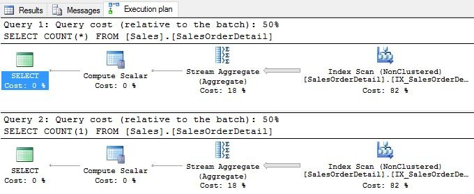
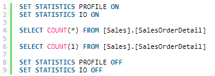

First, we'll start with the execution plan.
COUNT(1) and COUNT(*)
Here you can see that both COUNT(1) and COUNT(*) use the same execution plan. Both have the same query cost of 50%.
Let's check the query profile and I/O by using the below commands:
Query profile check
Here we have the result:
SELECT COUNT(*) FROM [Sales].[SalesOrderDetail]
|--Compute Scalar(DEFINE:([Expr1002]=CONVERT_IMPLICIT(int,[Expr1003],0)))
|--Stream Aggregate(DEFINE:([Expr1003]=Count(*)))
|--Index Scan(OBJECT:([AdventureWorks2014].[Sales].[SalesOrderDetail].[IX_SalesOrderDetail_ProductID]))
SELECT COUNT(1) FROM [Sales].[SalesOrderDetail]
|--Compute Scalar(DEFINE:([Expr1002]=CONVERT_IMPLICIT(int,[Expr1003],0)))
|--Stream Aggregate(DEFINE:([Expr1003]=Count(*)))
|--Index Scan(OBJECT:([AdventureWorks2014].[Sales].[SalesOrderDetail].[IX_SalesOrderDetail_ProductID]))The PROFILE data of both queries shows COUNT(*). That means the SQL engine internally converts COUNT(1) to COUNT(*). Let's continue with the I/O stats:
Table 'SalesOrderDetail'. Scan count 1, logical reads 276, physical reads 1,
read-ahead reads 288, lob logical reads 0, lob physical reads 0, lob read-ahead reads 0.
Table 'SalesOrderDetail'. Scan count 1, logical reads 276, physical reads 0,
read-ahead reads 0, lob logical reads 0, lob physical reads 0, lob read-ahead reads 0.Both queries read 276 pages.
Based on the above prooves, we can clearly say with no doubt that, THERE IS NO DIFFERENCE BETWEEN COUNT(1) AND COUNT(*).